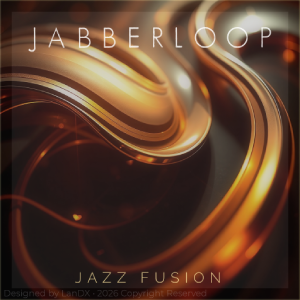
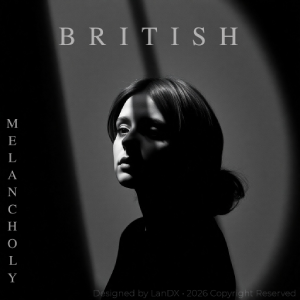

Cybernetic Solitude
Prompt-driven cyberpunk dystopia, corrected via Photopea luminance matching and cyan telemetry adjustment.
AI-Assisted Contextual Designs & Digital Post-Processing
A collection of playlist cover designs leveraging advanced prompt syntax architectures for semantic image synthesis, refined through Photopea for color telemetry alignment, structural asset masking, and typographic composition.

Prompt-driven cyberpunk dystopia, corrected via Photopea luminance matching and cyan telemetry adjustment.

Retro synthwave aesthetic, fine-tuned with high-precision asset overlays and custom typography layouts.
Pure geometric abstraction balancing open-canvas breathing room with custom-masked structural shadows.